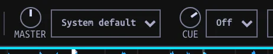

Audio and Cue mode
Route Master and headphone audio, check PFL, and choose how paused Hot Cues behave.
On this page
Set audio outputs
The MASTER bus is what the room hears; the CUE bus is the headphone mix. They have independent top-bar gain and device selectors. The Mixer strip's CUE MIX controls how much pre-fader preview and Master signal reaches the headphones; it does not select a device.

- In the top bar, choose the device beside MASTER for the sound sent to your speakers. System default follows the computer's default output.
- Choose the device beside CUE for headphones. Off disables the Cue bus.
- On a multichannel interface, select explicit stereo pairs. The Inpulse 300 MK2's verified assignment is Master 1/2 and Cue 3/4; for other hardware confirm by listening with Test tone under Settings → Controllers → Controller check. A generic stereo device offers a single output choice.
- Adjust the top-bar MASTER and CUE knobs for their separate levels.
The screenshot shows the sandbox on System default / Off. Your available physical outputs depend on your device; a saved, unplugged controller from another machine is not an available destination. Output selectors refresh when opened; after plugging in a device, reopen a selector if its first list has not updated.
Preview in headphones
- Load a Track on a Deck, then enable that channel's headphone-icon PFL button (pre-fader listen).
- Start Deck playback, turn up the top-bar CUE level, and set CUE MIX toward cue-only (left). More than one PFL channel may be enabled at once; their signals mix together.
- Bring CUE MIX toward the right to blend in Master; fully right is Master only. Double-click it to return to cue-only. Lower the channel fader to keep that Deck out of Master while listening on PFL.
PFL hears a channel after trim, EQ and sweep filter, before its channel fader, Beat FX and crossfader. Master in the headphone mix is after the crossfader and Master Beat FX, but before the Master volume knob. To hear a Deck-target Beat FX through headphones, listen to the resulting Master signal instead of its PFL tap.
Output choices are saved. If a saved device is unplugged, Master falls back to the system default and Cue turns off without changing saved choices. Explicit pairs on a device whose physical order has not been verified must be selected; the app does not guess that the first pair is safe. On an interface carrying both buses, assign them separate pairs. When routed to separate devices, the Cue signal uses a different output path; test both buses before performing.
| Symptom | Check |
|---|---|
| Master silent | Loaded/playing Deck, trim, EQ/filter, channel fader, crossfader and assignment, top-bar MASTER gain/output. |
| PFL silent but Master audible | Top-bar CUE output (not Off/unplugged), CUE gain, channel PFL enabled, CUE MIX not fully toward Master. |
| PFL works but Deck FX absent | Expected: PFL taps before Beat FX. Hear processed program using the Master side of CUE MIX. |
| Select shows unavailable device | Reconnect and reopen it, or choose a currently available output pair. MIDI recognition alone does not route audio. |
Choose paused Hot Cue behavior
Cue mode controls Hot Cue playback, independently of headphone routing.
Open Settings → Help → Setup → Cue mode, choose a mode, and click Continue:
- Gated: hold a Hot Cue on a paused Deck to preview from it; release returns to the cue.
- Trigger: press a Hot Cue to jump there and start playback; releasing keeps it playing.
You can change the saved preference directly with GATED in Performance: lit means Gated, unlit means Trigger. It applies across Decks to keyboard, controller, and on-screen Hot Cues. On a playing Deck, both modes jump. The Main cue keeps its hold behavior in either mode.
A Gated preview follows normal mixer routing. Enable PFL and keep the channel out of Master when you want that preview only in headphones.
Main Cue is separate: holding it at its marker previews until release in either mode, while pressing it during playback returns and pauses. Quantize can affect where cues are placed; it does not choose Gated versus Trigger.